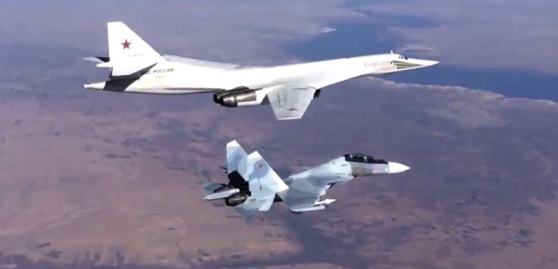
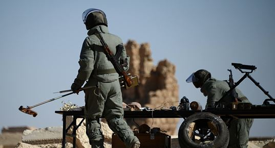
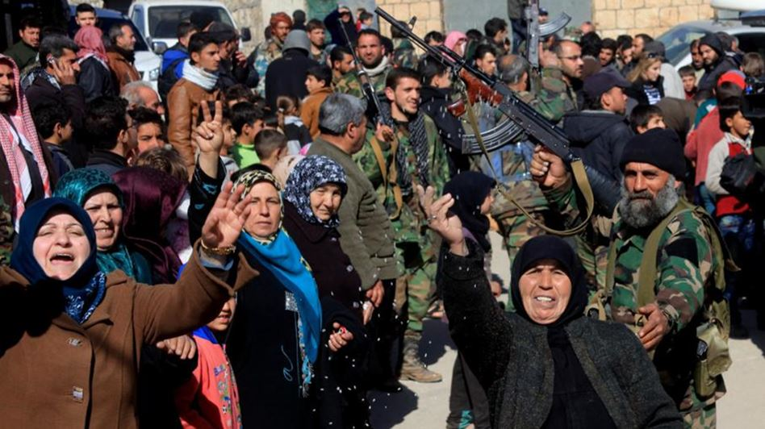

Le 30 septembre 2015, le Conseil de la Fédération de l'Assemblée fédérale de la Fédération de Russie approuve l'appel de Vladimir Poutine afin de permettre l'utilisation des forces armées russes à l'étranger. Le jour même, l’aviation russe bombarde des positions anti-Assad en Syrie désignées comme terroristes. Il s'agit de la première intervention militaire de la Russie en dehors des frontières de l'ancienne Union soviétique, depuis la guerre d'Afghanistan (1979-1989).
Le 30 janvier 2017, à Astana, la Russie et la Turquie se sont entendues pour co-parrainer l'accord de cessez-le-feu en Syrie, avec le soutien du Haut Comité de Négociations (HCN), considéré par les Nations Unies comme le principal organe de l'opposition syrienne.
Ce processus avait été initié le 9 août dernier à Saint-Pétersbourg, lors d’une rencontre entre le président de la République turque, Recep Tayyip Erdoğan et Vladimir Poutine. Peu de choses avaient filtré de leurs échanges, mais on ne peut que constater le spectaculaire de leur réconciliation, réalisée sur le dos des Etats-Unis, et donc de l’Otan, ce qui du point de vue russe, n’est pas un détail. Dans l’art du billard à trois bandes, Poutine est passé maitre. L’axe Russie –Turquie –Iran, que nos chancelleries occidentales n’avaient pas vu venir, cache d’autres surprises.
Il faut se souvenir que la Russie et la Turquie étaient au bord de l'affrontement après qu'un Sukhoï 24 avait été abattu par la chasse turque en novembre 2015. Pourtant, le tsar et le sultan sont aujourd’hui très proches, tant leurs intérêts paraissent communs, car l’un comme l’autre veulent redonner à leur pays une indépendance et une influence nouvelles dans ce nouvel échiquier du monde.
Même l'assassinat de l'ambassadeur russe, à Ankara, le 19 décembre n'aura porté aucun ombrage à ce nouvel axe stratégique, alors qu’Obama, sur la fin de son mandat, use de son pouvoir agonisant pour utiliser des méthodes totalement inefficaces, comme au bon vieux temps de la guerre froide. Comme si l’exclusion de diplomates, qui sera suivie d’un effet de réciprocité de la part de Moscou, (l’intelligence consisterait à ne pas appliquer cette règle), pouvait cacher son absence totale de politique contre le terrorisme concomitant à une vision d’un monde qu’il ne comprend pas. A force de vouloir pousser la poussière sous le tapis, on finit par s’y prendre les pieds.
La Russie a désormais toutes les cartes pour régler le conflit syrien, elle le réglera. Ce n’est que le premier élément d’une fusée à plusieurs étages lancée par un Poutine triomphant qui a mené de bout en bout une opération politico-militaire modèle.
Il faut se souvenir que la phase active de l’intervention de la Russie en Syrie avait été préparée et pensée bien en amont et pourtant cela n’a pas empêché la Russie par l’ampleur et l’efficacité de son action à créer la surprise stratégique, mettant à mal la riposte diplomatique et militaire des occidentaux, plus que moyennement efficace en Irak.
Nos dirigeants avaient d’ailleurs oublié (mais le savaient-ils ?) que les relations d'ententes de la Russie avec l’État syrien dataient de 1946, d'avant l'indépendance de la Syrie, où un traité secret avait été signé entre l'Union soviétique et les futurs dirigeants syriens. Accord qui ne fut jamais démenti et qui a survécu à la chute de l’URSS, comme à la montée des nationalismes arabes. Bref, la surprise stratégique fut totale pour nos têtes pensantes. Il est probable qu’il y en ait d’autres comme celles qui eurent lieu en Crimée. La liste n’est pas close, Poutine a désormais les coudées franches.
 Démineurs russes à AlepLa reconquête d’Alep par les forces russo-syrienne que certains ont dénoncée comme étant un génocide, une boucherie, un terrorisme de guerre, une atteinte au droit de l’homme, en oubliant le fait que dans la conception russe de l’art de la guerre en zone urbaine, les frappes ont pour objet de désorganiser l’adversaire, sans discrimination de cibles, lorsque celles-ci servent de protection à l’ennemi.
Notre conception « droits de l’hommisme tartuffienne », à géométrie variable sert surtout à dénoncer notre incapacité à se mettre à la hauteur des enjeux. Les groupes islamistes sunnites, dits indépendants, comme Ahrar al-Cham, ou salafistes djihadistes comme le Front al-Nosra qui sont tout aussi peu fréquentables que celui des daesh, qui tuent, violent, émasculent, prennent en otage la population méritent-ils de tels atermoiements sous prétextes qu’ils s’opposent à un autre dictateur ?
Comme le dit si bien un proverbe africain, « Quand le singe veut monter au cocotier, il faut qu'il ait le cul propre ».
La guerre est une saloperie, elle n’est que le constat de l’échec de la diplomatie. Il n’y a pas de guerre propre et nous n’y échappons pas. La guerre en dentelle, sans morts visibles et sans blessés, sans destructions, tient de la désinformation, on tue en différé, mais on tue tout de même. On ne peut reprocher à la Russie le fait de ne pas l’avoir compris et de l’assumer.
C’est pourquoi, la communication dans ces phases de conflit est d’une importance capitale. Elle fut de la part des Russes un modèle du genre, ce qui fait prendre la mesure des efforts que devraient consentir les occidentaux, pour arriver à un tel niveau. Outre les images et les vidéos largement diffusées, la communication russe fut accompagnée d’un discours diplomatique tout azimut dont la cohérence pourrait se résumer en trois formules plus une :
- Bachar el-Assad est une pièce indispensable au règlement de la crise syrienne.
- Il n’est pas nécessaire de reproduire les erreurs faites en Libye et en Irak par les occidentaux.
- Aider l’opposition au régime légitime de Bachar el-Assad qui est composée en majorité d’extrémistes islamistes, autrement dit remplacer la peste par le choléra reviendrait à installer le même chaos constaté en Irak et en Libye, en Syrie.
Enfin, la lutte contre Daesh passera donc par une phase de stabilisation du régime syrien.
Ce discours constant a eu l’avantage d’être compréhensible par la majorité des gens, et cela a eu pour effet immédiat de faire passer le centre de décision de Washington à Moscou et de forcer les différents acteurs régionaux à un repositionnement face à cette nouvelle donne. D’ailleurs, le chef de la diplomatie russe, Sergueï Lavrov, avait annoncé le début de préparatifs aux négociations de paix sur le règlement du conflit syrien. « Nous commençons avec les Turcs et les Iraniens à préparer la rencontre à Astana », a-t-il indiqué, alors qu'Ankara et Téhéran ont affiché leur volonté d'être avec Moscou des garants d'un éventuel accord de paix entre le régime syrien et l'opposition qui pourrait être conclu à Astana. On ne peut être plus clair, les Etats-Unis et l’Europe, dont la France en premier, sont hors-jeux. Hollande, la cravate de travers, ne peut qu’avaler son chapeau pour le temps qui lui reste.

Population en liesse pour accueillir les troupes de l’armée syrienne
La chute d’Alep est une grande victoire pour Moscou à qui on a grandement facilité la tâche, par le fait d’une politique américaine inconséquente, hésitante, contre-productive, une Europe aux abonnés absents, une France prétentieuse, cumulant les erreurs et les imprécisions, incapable de choisir ses vrais amis et pactisant avec ses ennemis.
Poutine a gagné en quelque sorte par forfait des Occidentaux, et de la France en particulier, avec l’incompétence d’un ministre des affaires étrangères parfaitement étranger aux affaires réagissant encore comme s’il était à l’âge du minitel à défaut d’avoir compris l’importance du net.
La Russie est redevenue sur le plan international un acteur incontournable dans le règlement des grandes crises. J’oserais même dire qu’elle est aujourd’hui plus forte qu’elle ne l’était à l’époque de l’URSS, car elle est paradoxalement plus ouverte vers le monde, moins emprisonnée dans le carcan des idéologies. C’est un fait, le leadership des Etats-Unis en a pris un bon coup et la venue aux affaires d’un Trump avec les incertitudes de sa politique risque de brouiller un discours de moins en moins compréhensible y compris pour ses alliés les plus fidèle.
Reste l’Europe, ce géant économique au pied d’argile, incapable de peser sur les affaires du monde, compte tenu de son incapacité à construire une politique de diplomatie et de défense commune, de défendre ses frontières, en danger de déstabilisation, envahie par une immigration, véritable bombe à retardement, qui inquiète (les chiffres en Europe sont passés de 200000 demandeurs d’asile en 2010, 1200000 en 2015, sans compter les clandestins), l’Europe ébranlée par des attentats, regarde passer le train de l’histoire et reste immobile sur son propre quai.
Ainsi, ce rééquilibrage vers un monde plus multi-polaire voulu par Poutine pour contrebalancer la politique hégémonique américaine tient sa première vraie victoire en dehors du continent eurasien. Il a su redonner un sens à ce pays et une fierté à son peuple bafoué et méprisé par une Europe que n’a pas su ou voulu tendre la main à la Russie, après la chute de l’URSS, mais qui a souhaité égoïstement profiter des soi-disant dividendes de la paix, avec les résultats que nous savons.
Un nouveau monde se dessine, il ne sera jamais plus comme avant. Nous sommes face à un défi permanent, une redistribution des cartes, une redéfinition des frontières au Moyen-Orient et au Levant.
Il est certain qu’une autre crise s’annonce en Europe de l’Est, au Donbass, en Ukraine, aux frontières de la Pologne et sur le pourtour de la Mer Noire. En Asie, des enjeux nouveaux se dessinent avec une Chine de plus en plus conquérante.
Jamais l’équilibre du monde n’a été à ce point précaire. Il est possible que nous vivions les prémices d’une conflagration mondiale aux conséquences dramatiques.
Poutine, en renversant la table au Levant et en construisant une coalition russo-iranienne avec le Hezbollah comme allié, et la Turquie comme nouveau partenaire, membre éminent de l’Otan, troublera le jeu des Etats-Unis. Le pire n’est pas certain, le meilleur non plus.
L’oncle Sam devra aussi réviser sa politique internationale en profondeur. Le 11 septembre l’Amérique a vacillé, elle devrait se souvenir que les empires les plus solides finissent toujours par s’autodétruire comme à la fin d’un cycle, et ce cycle de la prééminence de l’occident sur les Orients semblent atteindre le point de non-retour.
Le prochain président français devra, s’il veut encore sauver de la France ce qui peut l’être encore, rééquilibrer ses relations avec la Russie et la Chine et prendre de la distance avec les Etats-Unis.
Parfois, il n’est de pire ennemi que sa propre famille. Il lui faudra tenter de secouer une Europe à bout de souffle et sans réel projet. Vaste programme, comme dirait de Gaulle. Nous devons tirer un trait sur la politique catastrophique que nous avons subie depuis de nombreuses années, depuis que nous sommes revenus dans le giron de l’Otan. Notre dernier acte d’indépendance aura été celui de ne pas nous engager dans la guerre en Irak, c’était sous Chirac, c’était hier, il y a un siècle... Il n’est pas certain que nous aurions la possibilité de le faire encore aujourd’hui.
Poutine a joué en Syrie le jeu de l’hyper-puissance dans l’intérêt de son pays et non du notre, cela va sans dire mais encore mieux en le disant, afin d’affaiblir la position intenable de l’occident.
Il me semble que celui qui a le mieux compris cette situation, parmi les candidats à l’élection présidentielle, est François Fillon. Nous verrons s’il maintient cette position et s’il est capable de faire adhérer à son projet une majorité de Français.
Sans quoi, nous serons les éternels invités de la dernière heure, à qui, à défaut d’un fauteuil, on offrira toujours un strapontin.
Partager cette page